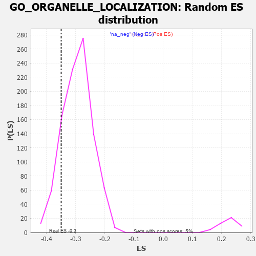

| | | Dataset | 7d |
| Phenotype | NoPhenotypeAvailable |
| Upregulated in class | na_neg |
| GeneSet | GO_ORGANELLE_LOCALIZATION |
| Enrichment Score (ES) | -0.3499396 |
| Normalized Enrichment Score (NES) | -1.1894941 |
| Nominal p-value | 0.13746065 |
| FDR q-value | 0.6448863 |
| FWER p-Value | 1.0 |
Table: GSEA Results Summary
 Fig 1: Enrichment plot: GO_ORGANELLE_LOCALIZATION
Fig 1: Enrichment plot: GO_ORGANELLE_LOCALIZATION
Profile of the Running ES Score & Positions of GeneSet Members on the Rank Ordered List
| PROBE | GENE SYMBOL | GENE_TITLE | RANK IN GENE LIST | RANK METRIC SCORE | RUNNING ES | CORE ENRICHMENT | | 1 | SPO11 | | | 35 | 3.371 | 0.0332 | No |
| 2 | RAC2 | | | 60 | 2.442 | 0.0575 | No |
| 3 | FOXF1 | | | 176 | 1.136 | 0.0554 | No |
| 4 | NSF | | | 243 | 0.947 | 0.0576 | No |
| 5 | MLH1 | | | 423 | 0.679 | 0.0422 | No |
| 6 | NMD3 | | | 513 | 0.625 | 0.0377 | No |
| 7 | KIF23 | | | 522 | 0.622 | 0.0436 | No |
| 8 | MX1 | | | 578 | 0.604 | 0.0433 | No |
| 9 | CCNB1 | | | 581 | 0.601 | 0.0498 | No |
| 10 | NDC80 | | | 616 | 0.590 | 0.0520 | No |
| 11 | TFEB | | | 839 | 0.522 | 0.0294 | No |
| 12 | STX17 | | | 940 | 0.497 | 0.0221 | No |
| 13 | NOP9 | | | 993 | 0.485 | 0.0208 | No |
| 14 | AP3S1 | | | 1063 | 0.471 | 0.0172 | No |
| 15 | MYO1D | | | 1099 | 0.464 | 0.0179 | No |
| 16 | NEDD1 | | | 1186 | 0.449 | 0.0119 | No |
| 17 | DOCK7 | | | 1398 | 0.410 | -0.0106 | No |
| 18 | NUP88 | | | 1429 | 0.404 | -0.0099 | No |
| 19 | CHMP7 | | | 1435 | 0.403 | -0.0061 | No |
| 20 | TRAK1 | | | 1714 | 0.354 | -0.0378 | No |
| 21 | ESPL1 | | | 1734 | 0.349 | -0.0364 | No |
| 22 | UVRAG | | | 1831 | 0.332 | -0.0450 | No |
| 23 | NUP62 | | | 1871 | 0.324 | -0.0464 | No |
| 24 | CUL3 | | | 1893 | 0.321 | -0.0455 | No |
| 25 | ZW10 | | | 1973 | 0.309 | -0.0522 | No |
| 26 | MCFD2 | | | 1975 | 0.309 | -0.0488 | No |
| 27 | BRSK2 | | | 1979 | 0.308 | -0.0458 | No |
| 28 | GOSR2 | | | 2050 | 0.298 | -0.0514 | No |
| 29 | CENPE | | | 2086 | 0.293 | -0.0527 | No |
| 30 | STX16 | | | 2116 | 0.289 | -0.0532 | No |
| 31 | CNIH1 | | | 2159 | 0.283 | -0.0554 | No |
| 32 | SYK | | | 2186 | 0.278 | -0.0556 | No |
| 33 | WASF1 | | | 2303 | 0.259 | -0.0676 | No |
| 34 | SEC13 | | | 2330 | 0.256 | -0.0681 | No |
| 35 | CDT1 | | | 2505 | 0.226 | -0.0879 | No |
| 36 | YKT6 | | | 2571 | 0.217 | -0.0939 | No |
| 37 | ARL8B | | | 2577 | 0.216 | -0.0921 | No |
| 38 | VPS4A | | | 2654 | 0.205 | -0.0996 | No |
| 39 | DCTN3 | | | 2731 | 0.193 | -0.1072 | No |
| 40 | LMAN1 | | | 2743 | 0.192 | -0.1064 | No |
| 41 | RIOK2 | | | 2775 | 0.187 | -0.1083 | No |
| 42 | SCFD1 | | | 2783 | 0.185 | -0.1071 | No |
| 43 | FER | | | 2803 | 0.183 | -0.1075 | No |
| 44 | BECN1 | | | 2828 | 0.179 | -0.1086 | No |
| 45 | COPG2 | | | 2859 | 0.173 | -0.1105 | No |
| 46 | MTM1 | | | 2893 | 0.168 | -0.1129 | No |
| 47 | GOSR1 | | | 2940 | 0.159 | -0.1170 | No |
| 48 | RAB17 | | | 2950 | 0.157 | -0.1164 | No |
| 49 | RAB10 | | | 2952 | 0.157 | -0.1148 | No |
| 50 | BTK | | | 2958 | 0.156 | -0.1137 | No |
| 51 | XPO1 | | | 2960 | 0.156 | -0.1121 | No |
| 52 | PEX1 | | | 2990 | 0.151 | -0.1141 | No |
| 53 | ABCE1 | | | 3051 | 0.143 | -0.1202 | No |
| 54 | FEZ1 | | | 3055 | 0.142 | -0.1190 | No |
| 55 | MAP2 | | | 3074 | 0.140 | -0.1197 | No |
| 56 | STX6 | | | 3087 | 0.138 | -0.1197 | No |
| 57 | PAX6 | | | 3170 | 0.127 | -0.1289 | No |
| 58 | TFG | | | 3243 | 0.114 | -0.1368 | No |
| 59 | RAB8A | | | 3319 | 0.102 | -0.1453 | No |
| 60 | KIF1A | | | 3415 | 0.088 | -0.1566 | No |
| 61 | CDK5 | | | 3480 | 0.080 | -0.1639 | No |
| 62 | FES | | | 3501 | 0.077 | -0.1656 | No |
| 63 | LSG1 | | | 3534 | 0.070 | -0.1689 | No |
| 64 | PARD3 | | | 3584 | 0.063 | -0.1745 | No |
| 65 | STK25 | | | 3602 | 0.059 | -0.1760 | No |
| 66 | CBL | | | 3621 | 0.056 | -0.1777 | No |
| 67 | SYT11 | | | 3732 | 0.036 | -0.1914 | No |
| 68 | CEP19 | | | 3778 | 0.031 | -0.1969 | No |
| 69 | SPAST | | | 3801 | 0.027 | -0.1994 | No |
| 70 | SFI1 | | | 3810 | 0.026 | -0.2001 | No |
| 71 | BET1 | | | 3817 | 0.025 | -0.2006 | No |
| 72 | NEK2 | | | 3871 | 0.016 | -0.2073 | No |
| 73 | AP3B2 | | | 3974 | -0.002 | -0.2203 | No |
| 74 | CHMP6 | | | 3977 | -0.003 | -0.2206 | No |
| 75 | TOR1A | | | 4030 | -0.013 | -0.2271 | No |
| 76 | MCPH1 | | | 4039 | -0.014 | -0.2280 | No |
| 77 | MTOR | | | 4114 | -0.025 | -0.2372 | No |
| 78 | STX7 | | | 4147 | -0.033 | -0.2410 | No |
| 79 | SYNJ1 | | | 4173 | -0.038 | -0.2437 | No |
| 80 | EXOC4 | | | 4182 | -0.039 | -0.2443 | No |
| 81 | VPS11 | | | 4202 | -0.041 | -0.2463 | No |
| 82 | GBF1 | | | 4215 | -0.044 | -0.2474 | No |
| 83 | RRS1 | | | 4256 | -0.051 | -0.2519 | No |
| 84 | WDR11 | | | 4262 | -0.052 | -0.2520 | No |
| 85 | RAN | | | 4299 | -0.059 | -0.2560 | No |
| 86 | SAR1A | | | 4304 | -0.060 | -0.2558 | No |
| 87 | OPA1 | | | 4330 | -0.065 | -0.2583 | No |
| 88 | STX5 | | | 4400 | -0.077 | -0.2663 | No |
| 89 | KIF3B | | | 4450 | -0.085 | -0.2716 | No |
| 90 | LRRK2 | | | 4467 | -0.087 | -0.2727 | No |
| 91 | MEF2A | | | 4499 | -0.095 | -0.2756 | No |
| 92 | PINX1 | | | 4515 | -0.097 | -0.2765 | No |
| 93 | ESYT3 | | | 4528 | -0.101 | -0.2769 | No |
| 94 | STX2 | | | 4562 | -0.108 | -0.2799 | No |
| 95 | SYT4 | | | 4590 | -0.116 | -0.2821 | No |
| 96 | MYO5A | | | 4787 | -0.155 | -0.3055 | No |
| 97 | PCLO | | | 4793 | -0.156 | -0.3044 | No |
| 98 | CEP97 | | | 4812 | -0.160 | -0.3050 | No |
| 99 | USO1 | | | 4855 | -0.168 | -0.3085 | No |
| 100 | DLG1 | | | 4860 | -0.169 | -0.3071 | No |
| 101 | MARK2 | | | 4899 | -0.177 | -0.3100 | No |
| 102 | VAMP8 | | | 4905 | -0.179 | -0.3086 | No |
| 103 | CHMP5 | | | 4952 | -0.188 | -0.3124 | No |
| 104 | PDPK1 | | | 5043 | -0.207 | -0.3217 | No |
| 105 | FLCN | | | 5140 | -0.235 | -0.3314 | No |
| 106 | DCTN2 | | | 5175 | -0.243 | -0.3330 | No |
| 107 | HDAC6 | | | 5183 | -0.244 | -0.3312 | No |
| 108 | ATM | | | 5210 | -0.249 | -0.3318 | No |
| 109 | GPSM2 | | | 5228 | -0.252 | -0.3311 | No |
| 110 | PTEN | | | 5262 | -0.261 | -0.3324 | No |
| 111 | CDK1 | | | 5264 | -0.262 | -0.3296 | No |
| 112 | CEP70 | | | 5282 | -0.267 | -0.3288 | No |
| 113 | MAGI2 | | | 5295 | -0.269 | -0.3274 | No |
| 114 | RAB7A | | | 5302 | -0.271 | -0.3251 | No |
| 115 | PLK4 | | | 5397 | -0.295 | -0.3339 | No |
| 116 | AP3S2 | | | 5433 | -0.303 | -0.3350 | No |
| 117 | KIF3A | | | 5480 | -0.313 | -0.3374 | No |
| 118 | CEP76 | | | 5485 | -0.315 | -0.3344 | No |
| 119 | NDE1 | | | 5578 | -0.339 | -0.3424 | No |
| 120 | VPS45 | | | 5618 | -0.350 | -0.3435 | No |
| 121 | ASPM | | | 5637 | -0.358 | -0.3418 | No |
| 122 | TTBK2 | | | 5700 | -0.376 | -0.3456 | No |
| 123 | SLIT1 | | | 5735 | -0.387 | -0.3456 | Yes |
| 124 | MX2 | | | 5745 | -0.390 | -0.3424 | Yes |
| 125 | CDC23 | | | 5756 | -0.394 | -0.3393 | Yes |
| 126 | VAMP7 | | | 5777 | -0.399 | -0.3374 | Yes |
| 127 | LAMP1 | | | 5796 | -0.404 | -0.3352 | Yes |
| 128 | BBS4 | | | 5806 | -0.407 | -0.3318 | Yes |
| 129 | SNX4 | | | 5834 | -0.415 | -0.3306 | Yes |
| 130 | ARL6 | | | 5847 | -0.417 | -0.3275 | Yes |
| 131 | BBS5 | | | 5862 | -0.421 | -0.3245 | Yes |
| 132 | RAB13 | | | 5870 | -0.425 | -0.3207 | Yes |
| 133 | SUN2 | | | 5893 | -0.433 | -0.3187 | Yes |
| 134 | STK11 | | | 5922 | -0.443 | -0.3173 | Yes |
| 135 | DCTN1 | | | 5950 | -0.454 | -0.3157 | Yes |
| 136 | CNTRL | | | 5961 | -0.459 | -0.3118 | Yes |
| 137 | B9D1 | | | 5962 | -0.459 | -0.3067 | Yes |
| 138 | CENPJ | | | 5968 | -0.460 | -0.3022 | Yes |
| 139 | CKAP5 | | | 6032 | -0.482 | -0.3049 | Yes |
| 140 | VAMP3 | | | 6043 | -0.487 | -0.3007 | Yes |
| 141 | PLK1 | | | 6082 | -0.500 | -0.3000 | Yes |
| 142 | UBB | | | 6090 | -0.503 | -0.2953 | Yes |
| 143 | AP3M1 | | | 6100 | -0.506 | -0.2908 | Yes |
| 144 | B9D2 | | | 6196 | -0.535 | -0.2970 | Yes |
| 145 | MYO1E | | | 6200 | -0.537 | -0.2914 | Yes |
| 146 | CDC42 | | | 6236 | -0.548 | -0.2897 | Yes |
| 147 | PEX13 | | | 6255 | -0.557 | -0.2858 | Yes |
| 148 | AP3D1 | | | 6261 | -0.558 | -0.2802 | Yes |
| 149 | SYTL4 | | | 6304 | -0.578 | -0.2791 | Yes |
| 150 | BOD1 | | | 6320 | -0.583 | -0.2745 | Yes |
| 151 | BBS2 | | | 6383 | -0.608 | -0.2757 | Yes |
| 152 | RALB | | | 6399 | -0.617 | -0.2707 | Yes |
| 153 | MFN1 | | | 6502 | -0.663 | -0.2764 | Yes |
| 154 | CEP41 | | | 6516 | -0.669 | -0.2706 | Yes |
| 155 | PLIN5 | | | 6524 | -0.672 | -0.2640 | Yes |
| 156 | CLN3 | | | 6580 | -0.699 | -0.2632 | Yes |
| 157 | ARF1 | | | 6583 | -0.701 | -0.2556 | Yes |
| 158 | ALMS1 | | | 6590 | -0.704 | -0.2485 | Yes |
| 159 | MKS1 | | | 6607 | -0.715 | -0.2426 | Yes |
| 160 | VPS18 | | | 6659 | -0.743 | -0.2408 | Yes |
| 161 | TMED2 | | | 6665 | -0.746 | -0.2331 | Yes |
| 162 | OFD1 | | | 6692 | -0.758 | -0.2279 | Yes |
| 163 | C2CD3 | | | 6783 | -0.802 | -0.2305 | Yes |
| 164 | CEP72 | | | 6846 | -0.839 | -0.2291 | Yes |
| 165 | AHI1 | | | 6860 | -0.848 | -0.2213 | Yes |
| 166 | NINL | | | 6869 | -0.851 | -0.2128 | Yes |
| 167 | IQCB1 | | | 6882 | -0.856 | -0.2047 | Yes |
| 168 | DNM1L | | | 6963 | -0.913 | -0.2048 | Yes |
| 169 | NPHP4 | | | 6991 | -0.931 | -0.1978 | Yes |
| 170 | CEP83 | | | 7020 | -0.950 | -0.1908 | Yes |
| 171 | MYH10 | | | 7048 | -0.966 | -0.1835 | Yes |
| 172 | PIBF1 | | | 7049 | -0.966 | -0.1726 | Yes |
| 173 | BBS7 | | | 7089 | -0.988 | -0.1666 | Yes |
| 174 | RAB1A | | | 7096 | -0.993 | -0.1562 | Yes |
| 175 | CFTR | | | 7143 | -1.030 | -0.1506 | Yes |
| 176 | SYT1 | | | 7148 | -1.033 | -0.1396 | Yes |
| 177 | CETN2 | | | 7200 | -1.070 | -0.1342 | Yes |
| 178 | MFN2 | | | 7208 | -1.081 | -0.1230 | Yes |
| 179 | FBF1 | | | 7241 | -1.111 | -0.1146 | Yes |
| 180 | MYO7A | | | 7302 | -1.175 | -0.1092 | Yes |
| 181 | CEP89 | | | 7354 | -1.223 | -0.1021 | Yes |
| 182 | KCNB1 | | | 7444 | -1.327 | -0.0986 | Yes |
| 183 | CEP78 | | | 7464 | -1.354 | -0.0859 | Yes |
| 184 | VAPB | | | 7482 | -1.378 | -0.0727 | Yes |
| 185 | PDCD6 | | | 7630 | -1.615 | -0.0735 | Yes |
| 186 | CROCC | | | 7639 | -1.628 | -0.0563 | Yes |
| 187 | MYO6 | | | 7697 | -1.753 | -0.0440 | Yes |
| 188 | NPHP1 | | | 7791 | -2.041 | -0.0331 | Yes |
| 189 | GRIA1 | | | 7836 | -2.260 | -0.0134 | Yes |
| 190 | CAV3 | | | 7896 | -2.739 | 0.0096 | Yes |
Table: GSEA details [plain text format]

Fig 2: GO_ORGANELLE_LOCALIZATION: Random ES distribution
Gene set null distribution of ES for GO_ORGANELLE_LOCALIZATION